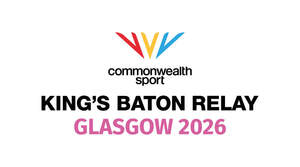
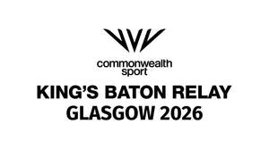

Trade Mark Journal No.2025/044 31 October 2025
UK00004169287 5 March 2025 (35,41)
Mark 1

Mark 2

The rights conferred by this registration are personal to Commonwealth Games Federation and may not be enforced or acquired by any licensee or assignee/transferee of the said Commonwealth Games Federation. This limitation shall not restrict Commonwealth Games Federation from permitting third parties to use the mark under contract.
- Class 35
- Promoting sports competitions; promoting sports events, cultural events and games.
- Class 41
- Archive services for still and moving images; educational services; provision of education, instructional and teaching services; sports and physical education instruction services; providing of training; entertainment services; sports entertainment services; sports and fitness services; provision of recreational facilities; sports officiating, refereeing, training, tuition and coaching; sports activities; sporting services; sporting and cultural activities; organisation of conferences, seminars, congresses, workshops, exhibitions and competitions; organising of sports and sports events; the production, staging and organisation of sporting competitions and events and cultural activities; organising, producing and staging sport baton relay events; baton relay events; organising, producing and staging baton relay competitions for participants, athletes and spectators; the production of audio and visual shows, performances, programmes and recordings; tournaments (staging of sports); orchestral, music concert, disco and live performances; provision of sporting and recreational services and facilities; ticket agency services; provision, production and distribution of radio and television shows and programmes; film production; producing, organising and staging sports competitions; production of sporting events for radio, film and television; publication of printed media and recordings; electronic publishing services; publication of books, leaflets and instructional texts; advisory, information and consultancy services relating to all the aforesaid; provision of information regarding the above mentioned services, including the provision of such information on-line or via some other communications network.
Commonwealth Games Federation
Representative: HGF Limited